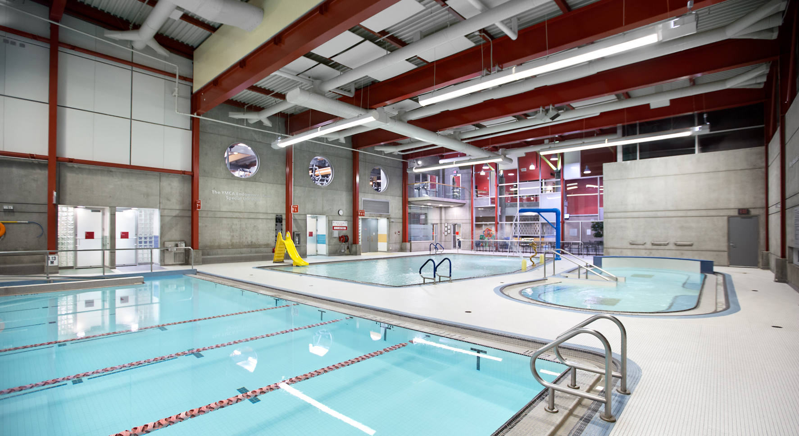
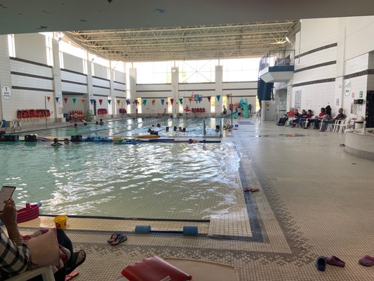
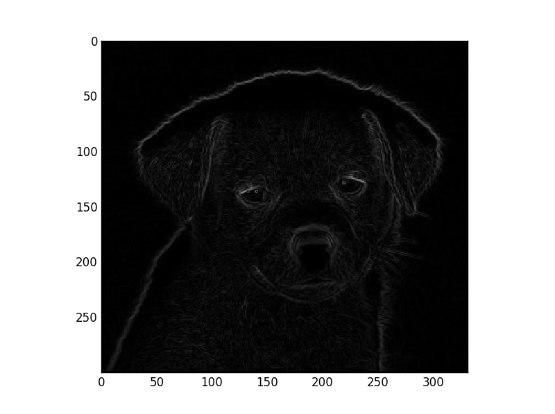
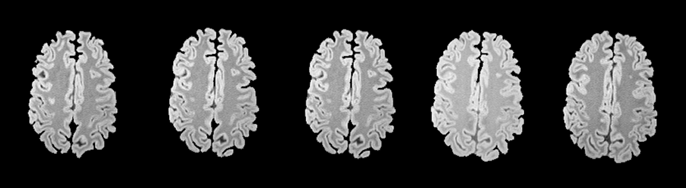
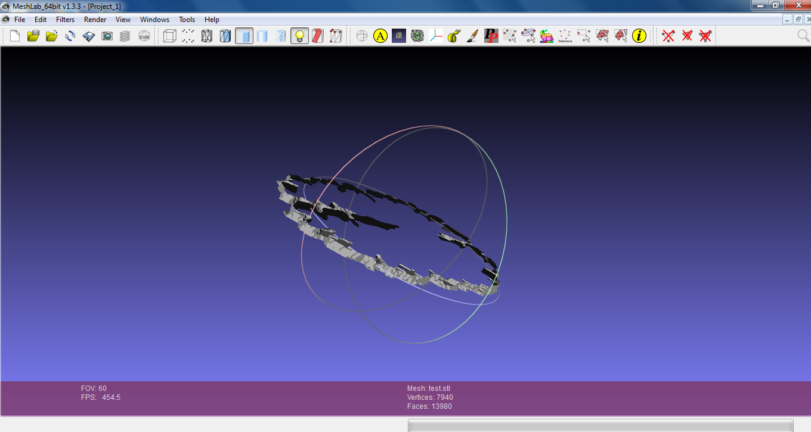
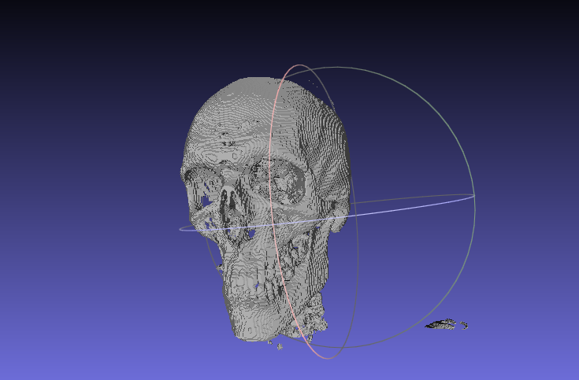
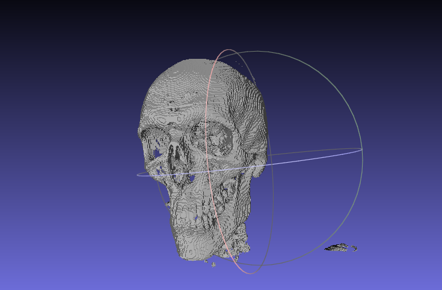
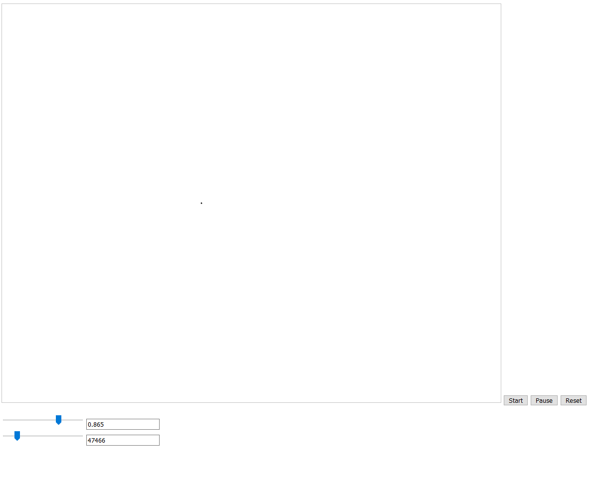

Work Experience
Nexone Programmer | May 2017 - Present
Key tasks:
- Ensure that patients are able to locate their items
- Enriched a patient’s live by chatting with them on a consistent basis
- Delivered items and gifts to wards around the entire hospital
- Helped the managers around the store with various problems and concerns
Nexone, a Canadian based paperless solution for the real estate market, is geared towards agents, brokerages, and even admins.
YMCA | July 2011 - May 2018
Key tasks:
- Ensure the safety of patreons in the pool
- Enable any age to become proficient in swimming
- Lead in team practices and staff inservices
- Helped the instructors around the pool with various problems and concerns
Tong Louie

I started my Lifeguarding/Instructing career at the YMCA in BC,
more specifically, I started working at the Tong Louie YMCA in Surrey BC as a volunteer back in 2010.
I helped out with the instructors as I got closer to the age where I could take WSI(water safety instructor) & NLS(National Life Saving) (16+ only).
Originally I was hired as a Lifeguard/Swim Instructor, and I spent the next 2 years working at Tong Louie building up my foundations of teaching.
Lifeguarding involves making sure the patreons were safe. Taking care of any minor issues around the pool such as cuts and scrapes.
Anything major that happened around the facility is also under the lifeguard's responsibilities.
As a Swim Instructor, keeping the children/students safe is number one priority.
The second biggest priority is to create a lesson in such a way that it suits the classes level of ability, whilst keeping them entertained.
I would tailor the lessons to each class and I could even teach the advanced portions such as Butterfly & Waterpolo.
Since I had to move to Edmonton for school, I had to give up this job in search for another part time during school hours.
William Lutsky

In the summer of 2013 when I first got to Edmonton, I applied for William Lutsky, as a Lifeguard and Swim instructor.
The role is the exact same as in Tong Louie.
Lifeguarding & Swim Instructing, but this time with a lot more experience under my belt.
I quickly became a Team Lead due to my plentiful experience.
My role as the Team Lead involved a couple things.
-Coaching newer instructors on teaching techniques.
-Handle special cases where a child is more disruptive or needs more one on one time.
-Take care of all of the paperwork before and after the swim lessons.
-Lead the weekly meetings of the instructors on updates, and lead the reflection or feedback portion of lessons.
-Lead inservices and teach other instructors on the activities.
Whilst I was working at William Lutsky, due to new rules and regulations, we were required to provide lesson plans regardless of new or old instructor.
Before, this was not a requirement, but due to my 5 years of experience at that point, I created a lesson plan generator in order to hand in my lesson plans every week.
As shown below.
NCHC | July 2015 - August 2015
Key tasks:
- Created a Python Program that could open Dicom files
- Read the arrays
- Segmentate the image
- Had a UI that chooses which segmentation to use
- Converted to a tif file to print in a 3D machine

NCHC or rather National Center for High-performance Computing is a place in Taiwan where one of the largest super computers are found.
I did a two month internship with them both learning about Taiwan's culture as well as learning how to code.
They assigned me one major project to complete within the two months which is to go from a dicom formatted (usually medical image) and turn that in to a 3D printable model
The split of my program largely came down to five different parts.
Step 1: Create a way to load dicom images into arrays in python
Step 2: Figure out a way to seperate out different parts of the images
Step 3: Group similar intensities of pixels together to form a group
Step 4: Create a UI that allows the user to choose which grouping to use on each image (or set a threshold)
Step 5: Arrange the output back into a dicom/tiff format
As shown in the image to the left, this is the segmentation portion of the program, the program first turns the images into greyscale
The Image below is the sample set that I used for testing, 5 seperate brain images (technically one file) because Dicom files are a stack of images

The image below is the output after running through my created program and then rendering it on MeshLab

The images here (shown below) are the final data set given. It involves an entire dicom file (about 200~ images) and then put through the program.
It was stripped mostly of all the fleshy bits (which have a lower rbg value) and then the skull was rendered out by the program.
 

Key Pieces of Tech Used: Python, Python packages, MeshLab, Dicom/Tiff
Volunteering
Hospital Gift Shop | November 2013 - May 2018

Key tasks:
- Ensure that patients are able to locate their items
- Enriched a patient’s live by chatting with them on a consistent basis
- Delivered items and gifts to wards around the entire hospital
- Helped the managers around the store with various problems and concerns
I really enjoyed this volunteering position for two reasons. The most important reason was the fact that patients from the entire hospital who couldn’t leave various reasons would come down to the store and refresh themselves from the dreary view that a hospital tends to inspire. I would tend to chat to many of the patients and recognize them as I have a static unchanging shift time. This felt like I was making a difference no matter how insignificant in a critical moment of their life. The other reason was the fact that I could enjoy a conversation with not only patients, but doctors, managers and other volunteers alike whilst still very easily maintaining control over the cash register and the line. It was basically a way for me to de-stress from school whilst doing something for the community.


Kings University | May 2016 - July 2016
Key tasks:
- Learn about Javascript and HTML.
- Create a program that mimics a flash physics particle.
 Volunteering for King University was quite a eye opener. They tasked me with creating a physics based simulation. At that point in school, I had just finished my second year courses and there was still a lot to learn. So I set about learning about canvas and javascript + html. I ended up creating a physics particle simulator which students can play around with the field and its sign. Thereby creating a more hands on experience for students studying physics.
Key Pieces of Tech Used: Javascript, HTML, CSS, Canvas